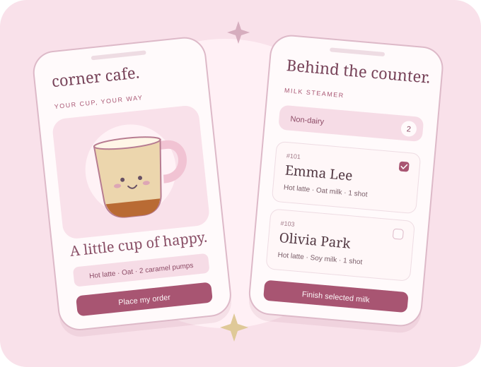
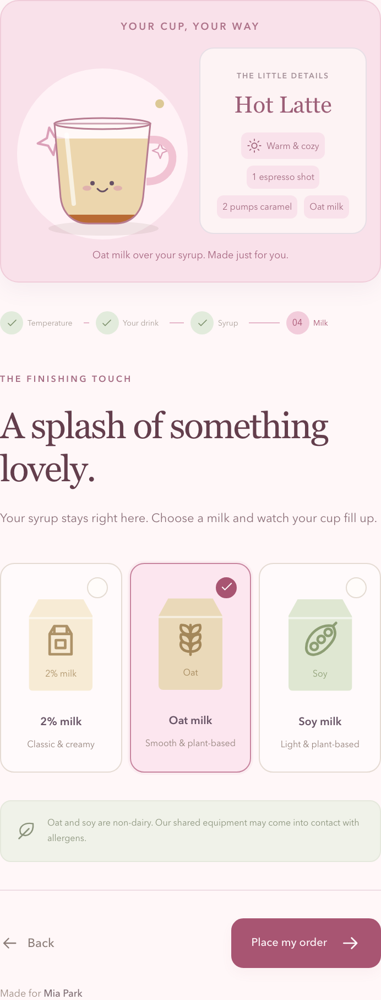
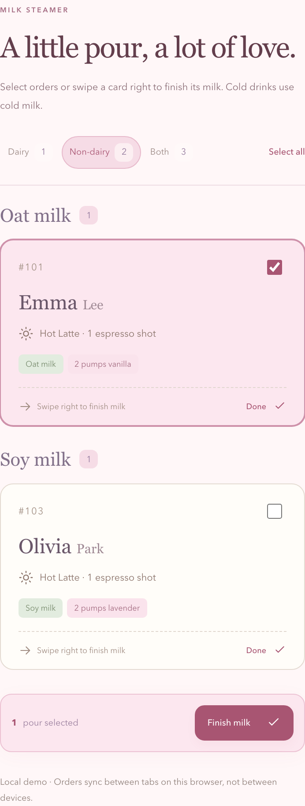
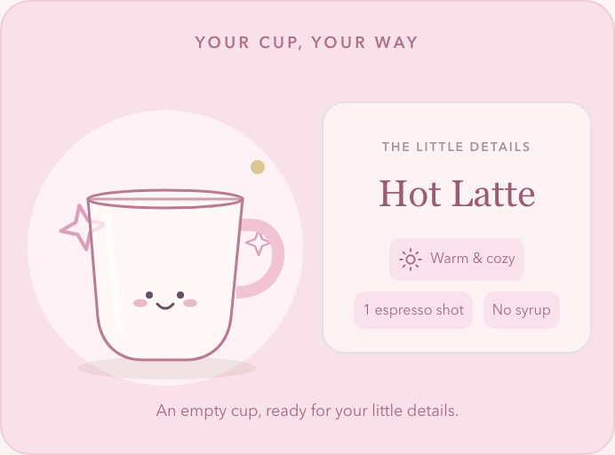
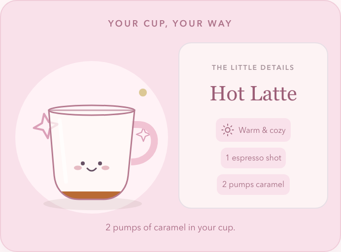
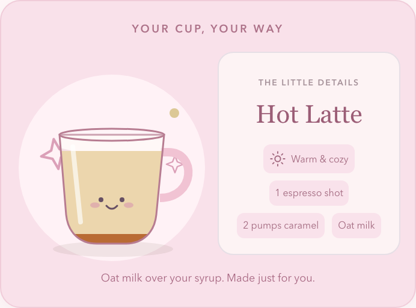

Corner Cafe.
Moving order information
ahead of the cup.
An order-ahead experience for a rotating volunteer coffee team, designed around the work behind the counter—not just the ordering screen.
Independent project · Prototype, not yet field-tested
one order, two sides of the counter- My focus
- Product design & prototyping
- Context
- A five-person volunteer line
- Tools
- Figma, HTML/CSS/JS, TypeScript
- Approach
- PRD-led, AI-assisted build
Order a coffee. Or help make someone’s.
Corner Cafe has two sides: a guided ordering flow for customers and three focused stations for the coffee team. Both are available to explore in the demo.
Make a drink your way.
- Enter. Use the Church Center demo or continue as a guest, choose Coffee Drinker, and enter a first and last name.
- Choose your coffee. Pick hot or iced, then Americano, latte, or mocha. Shot counts are fixed, not another question to answer.
- Customize. Latte and mocha continue to syrup, pump count, and milk. Americano skips these steps.
- Submit. Review the visible recipe and place the order. The status screen shows it being prepared.
- Pick up in person. See the ready state and collect the drink by name. The demo has an explicit ready-state preview.
Shortcut starts at guest name entry. Use a fictional name.
Pick a station. See what needs doing.
Enter the demo, choose Coffee Team, then select the role you are serving in.
Select labels to print, or take an order on someone’s behalf. The recipe remains readable if a label needs to be handwritten.
Choose dairy, non-dairy, or both. Read milk counts, then select orders or swipe a card to finish the milk and reduce the queue.
Select finished drinks and mark them ready. Customers’ status pages update in another tab in this same browser.
Shortcut opens the role picker and supplies fictional orders if the queue is empty.
Switching demo paths restarts an unfinished order. Guest access to team stations is a prototype convenience, not production authorization.
The bottleneck wasn’t just the line.
Orders were spoken, written by hand, and passed along with the cup. Because espresso shots go in before milk, the shot-puller sits between the order-taker and the steamers. The steamers learn the milk type only when the cup reaches them.
That suggested a more useful problem than simply “put ordering on a phone”: information can move in parallel even when drink preparation must remain sequential.
- Verbal order + handwritten label
- Shot-puller receives the cup
- Steamer finally learns the milk type
- Mixer finishes the drink
- Customer places an order ahead
- Team views receive the recipe together
- Fresh preparation begins after arrival*
- Mixer marks ready and calls the name
*Arrival confirmation still needs to be specified and tested. Earlier information is not permission to make a drink before its customer arrives.
Not every person needed another screen.
Keep the shot-puller off the app.
The PRD excludes a dedicated shot-puller view: they already receive the order through the existing handoff. Another screen would not clearly improve the four goals.
Give the mixer ownership of “ready.”
The mixer was initially out of scope, then added because they own the moment a finished drink becomes ready for pickup. A concrete responsibility justified the interface.
Keep a human fallback.
The order-taker can order for someone who does not use the app. If printing fails, the visible recipe remains available for a handwritten label.
A little delight for customers. Clarity for volunteers.


Full-panel captures from the coded prototype, using fictional demo orders. Sticky positioning is flattened only for capture so no controls are concealed.
Motion explains a change, not just a mood.



Fewer decisions, not more controls.
Shot count is fixed: two for an Americano, one for a latte or mocha. Americanos skip the syrup and milk steps entirely.
Feedback that matches the recipe.
The cup begins empty at the syrup step. Choosing a flavor starts with two pumps; each additional pump changes the visible level. Milk fills above the retained syrup.
Selection is explicit.
A border and checkmark acknowledge the chosen card. Hot and iced cups jump on selection; the visible recipe updates with the choice.
Boundaries prevent accidental input.
Pumps stay between 0 and 6, and unavailable counter actions are disabled. Required name fields stop an incomplete order before submission.
Gestures have a visible alternative.
Steamers can swipe a ticket or use its Done action. They can also select a batch and finish the milk together.
Motion has a quieter equivalent.
Reduced-motion mode shows the completed ingredient state without animated pouring. Counts, labels, and selected states still communicate the result.
A system behind the softness.
The blush palette is only the surface. The reusable structure includes selection cards, order tickets, role cards, counters, status badges, and distinct dairy, oat-grain, and soy-bean icons. States carry meaning: selected, unavailable, milk complete, and ready.
Emma Lee
Hot latte · 1 shot
Emma Lee
Hot latte · 1 shot
Emma Lee
Ready for a happy hello.
Illustrative state anatomy: the order identity stays stable while selection and fulfillment change.
Make the intent visible in the token name.
| Value | Semantic intent | Code usage |
|---|---|---|
#FFF7F8 | Canvas background | var(--bg) |
#FFFAFB | Default surface | var(--paper) |
#A85572 | Primary action | var(--accent) |
#EEDCE3 | Quiet separation | var(--line) |
background: var(--accent);See the token in action →The current Figma-to-CSS mapping is maintained manually, not an automated token pipeline. The app file uses local main components and instances; it does not require a published, paid-plan library.
The interaction is the evidence.
I used AI-assisted implementation to move from the PRD into a working HTML/CSS/JavaScript prototype and editable Figma artifacts. The coded version exercises the behavior; Figma documents the system and a preset walkthrough. They serve different purposes.
Try a latte as a guest, or choose Coffee team and add sample orders.
The demo loads only when you launch it. Use a made-up name.
Shared order data, different responsibilities.
One order model supplies the customer status, labels, milk queues, and mixer view. Browser-local persistence lets separate tabs demonstrate the handoff without a backend.
Built to inspect, not just watch.
Recipe validation, fixed shot counts, 0–6 pump limits, filtered milk counts, ready-state updates, and reduced-motion behavior are covered by logic tests and browser walkthroughs.
Explore Figma without leaving the case study.
The app is a preset click-through; the design-system file contains the editable foundations and components. Use the tabs below or the embedded player’s fullscreen control.
These are live Figma presentation embeds, not screenshots. The library tab presents its foundations; open the library link to browse all component pages. The coded demo above runs independently and does not require a Figma account.
A working prototype is not a measured outcome.
The next step is to observe service across multiple Sundays, collect the manual-workflow baseline, and test the proposed handoff with volunteers. No reduction in wait time has been established yet.
What confirms that a customer has arrived?
The PRD separates ordering from 9:00am–12:00pm and preparation beginning at 11:30am. The arrival signal and production gating still need definition and implementation. Earlier visibility must not become early preparation.
Before a pilot, I would also test printer failure, missed connections, role access, and the intended 48px touch-target and contrast rules across the actual screens.
The project is not just an ordering interface. It is a way to make a handoff clearer—and a reminder to keep the product’s promises separate from what a prototype has actually proved.